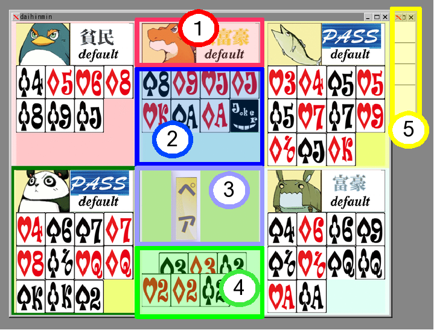
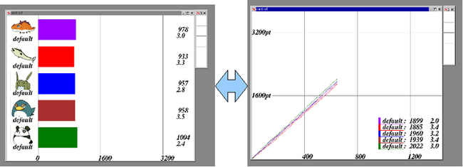

本章では、サーバープログラムの役割と使用方法を説明します。
コンパイル後、src ディレクトリに移動し、tndhms を実行して下さい。
tndhms-0.30 以降の場合
0.30 から、デフォルトの画面表示方法が変更になりました。
ゲーム中は、次の画面が表示されます。

画面の各部分の意味は、以下の通りです。
- 各ユーザーのイメージ画像と身分、クライアント名が表示されます。 パスをした場合、身分の代わりに「Pass」が表示されます。
- 各プレイヤーの持っているカードが表示されます。
- 現在のゲームのステータスが表示されます。ステータスには「しばり」「ペア」「階段」「革命」があります。また、 通常は緑色ですが、革命が起きるとオレンジ色になります。
- 現在場に出ているカードと、その1手前のカードを表示します。
- 操作窓です。サーバーの動作速度や画面表示を切り替えます。
- 一番上の四角をクリックした場合は、自動実行高速モードに切り替わります。
- 二番上の四角をクリックした場合は、自動実行低速モードに切り替わります。
- 三番目の四角をクリックした場合、ステップ実行モードに切り替わります。このモードの際は、この四角をクリックする毎に、1ステップずつ進みます。
- 四番目の四角の上半分をクリックした場合、グラフ表示モードに切り替わります。
その試合までの総得点の他、直前5試合の平均得点が表示されます。
下半分をクリックすると、棒グラフと線グラフが切り替えます。

また、設定で旧バージョンの外観に戻すこともできます。
tndhms-0.29 以前の場合
ゲーム中は、次の画面が表示されます。

画面の各部分の意味は、以下の通りです。
- 現在、場に出ているカードが表示されます。
- 通常は緑色ですが、革命が起きるとオレンジ色になります。
- 現在のゲームで「縛り」が行われているとき、ここに表示されます。
- 各プレイヤーの持っているカードの一覧です。
- 各プレイヤーがパスを行ったか否かを表示します。また、現在ターンが回っているプレイヤーを表示します。
- 各プレイヤーの現在の身分です。
- 操作窓です。サーバーの動作速度や画面表示を切り替えます。
- 一番上の四角をクリックした場合は、自動実行高速モードに切り替わります。
- 二番上の四角をクリックした場合は、自動実行低速モードに切り替わります。
- 三番目の四角をクリックした場合、ステップ実行モードに切り替わります。このモードの際は、この四角をクリックする毎に、1ステップずつ進みます。
- 四番目の四角をクリックした場合、グラフ表示モードに切り替わります。 各プレイヤーの得点推移がグラフによって表示されます。